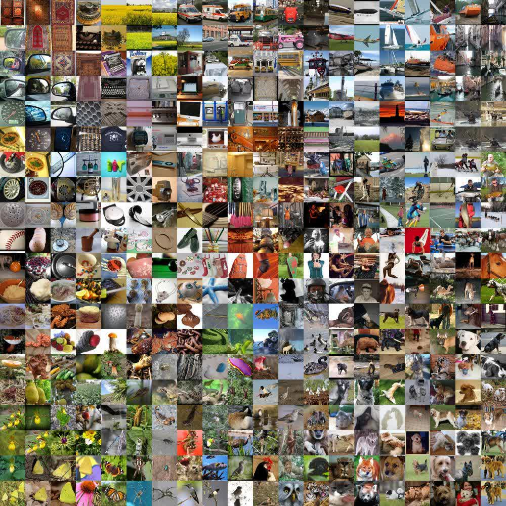
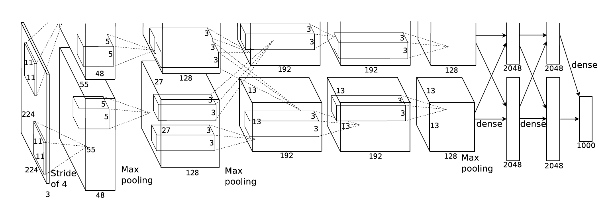
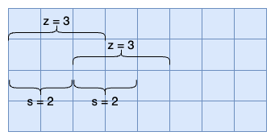

3.2 AlexNet
ImageNet Classification with Deep Convolutional Neural Networks
Created Date: 2025-06-14
We trained a large, deep convolutional neural network to classify the 1.2 million high-resolution images in the ImageNet LSVRC-2010 contest into the 1000 different classes. On the test data, we achieved top-1 and top-5 error rates of 37.5% and 17.0% which is considerably better than the previous state-of-the-art.
The neural network, which has 60 million parameters and 650,000 neurons, consists of five convolutional layers, some of which are followed by max-pooling layers, and three fully-connected layers with a final 1000-way softmax. To make training faster, we used non-saturating neurons and a very efficient GPU implementation of the convolution operation.
To reduce overfitting in the fully-connected layers we employed a recently-developed regularization method called "dropout" that proved to be very effective. We also entered a variant of this model in the ILSVRC-2012 competition and achieved a winning top-5 test error rate of 15.3%, compared to 26.2% achieved by the second-best entry.
3.2.1 Introduction
Current approaches to object recognition make essential use of machine learning methods. To improve their performance, we can collect larger datasets, learn more powerful models, and use better techniques for preventing overfitting.
Until recently, datasets of labeled images were relatively small — on the order of tens of thousands of images (e.g., CIFAR-10/100). Simple recognition tasks can be solved quite well with datasets of this size, especially if they are augmented with label-preserving transformations. For example, the current best error rate on the MNIST digit-recognition task (<0.3%) approaches human performance.
| airplane |  |
 |
 |
 |
 |
 |
 |
 |
 |
 |
| automobile |  |
 |
 |
 |
 |
 |
 |
 |
 |
 |
| bird |  |
 |
 |
 |
 |
 |
 |
 |
 |
 |
| cat |  |
 |
 |
 |
 |
 |
 |
 |
 |
 |
| deer |  |
 |
 |
 |
 |
 |
 |
 |
 |
 |
| dog |  |
 |
 |
 |
 |
 |
 |
 |
 |
 |
| frog |  |
 |
 |
 |
 |
 |
 |
 |
 |
 |
| horse |  |
 |
 |
 |
 |
 |
 |
 |
 |
 |
| ship |  |
 |
 |
 |
 |
 |
 |
 |
 |
 |
| truck |  |
 |
 |
 |
 |
 |
 |
 |
 |
 |
Figure 1 - The CIFAR-10 Dataset
But objects in realistic settings exhibit considerable variability, so to learn to recognize them it is necessary to use much larger training sets. And indeed, the shortcomings of small image datasets have been widely recognized, but it has only recently become possible to collect labeled datasets with millions of images.
The new larger datasets include LabelMe, which consists of hundreds of thousands of fully-segmented images, and ImageNet, which consists of over 15 million labeled high-resolution images in over 22,000 categories.
To learn about thousands of objects from millions of images, we need a model with a large learning capacity. However, the immense complexity of the object recognition task means that this problem cannot be specified even by a dataset as large as ImageNet, so our model should also have lots of prior knowledge to compensate for all the data we don’t have.
Convolutional neural networks (CNNs) constitute one such class of models. Their capacity can be controlled by varying their depth and breadth, and they also make strong and mostly correct assumptions about the nature of images (namely, stationarity of statistics and locality of pixel dependencies).
Thus, compared to standard feedforward neural networks with similarly-sized layers, CNNs have much fewer connections and parameters and so they are easier to train, while their theoretically-best performance is likely to be only slightly worse.
Despite the attractive qualities of CNNs, and despite the relative efficiency of their local architecture, they have still been prohibitively expensive to apply in large scale to high-resolution images. Luckily, current GPUs, paired with a highly-optimized implementation of 2D convolution, are powerful enough to facilitate the training of interestingly-large CNNs, and recent datasets such as ImageNet contain enough labeled examples to train such models without severe overfitting.
The specific contributions of this paper are as follows: we trained one of the largest convolutional neural networks to date on the subsets of ImageNet used in the ILSVRC-2010 and ILSVRC-2012 competitions and achieved by far the best results ever reported on these datasets. We wrote a highly-optimized GPU implementation of 2D convolution and all the other operations inherent in training convolutional neural networks, which we make available publicly.
Our network contains a number of new and unusual features which improve its performance and reduce its training time, which are detailed in Section 3. The size of our network made overfitting a significant problem, even with 1.2 million labeled training examples, so we used several effective techniques for preventing overfitting, which are described in Section 4.
Our final network contains five convolutional and three fully-connected layers, and this depth seems to be important: we found that removing any convolutional layer (each of which contains no more than 1% of the model’s parameters) resulted in inferior performance.
In the end, the network’s size is limited mainly by the amount of memory available on current GPUs and by the amount of training time that we are willing to tolerate. Our network takes between five and six days to train on two GTX 580 3GB GPUs. All of our experiments suggest that our results can be improved simply by waiting for faster GPUs and bigger datasets to become available.
3.2.2 The Dataset
ImageNet is a dataset of over 15 million labeled high-resolution images belonging to roughly 22,000 categories. The images were collected from the web and labeled by human labelers using Amazon’s Mechanical Turk crowd-sourcing tool. Starting in 2010, as part of the Pascal Visual Object Challenge, an annual competition called the ImageNet Large-Scale Visual Recognition Challenge (ILSVRC) has been held. ILSVRC uses a subset of ImageNet with roughly 1000 images in each of 1000 categories. In all, there are roughly 1.2 million training images, 50,000 validation images, and 150,000 testing images.

Figure 2 - Sample Images from ImageNet
ILSVRC-2010 is the only version of ILSVRC for which the test set labels are available, so this is the version on which we performed most of our experiments. Since we also entered our model in the ILSVRC-2012 competition, in Section 6 we report our results on this version of the dataset as well, for which test set labels are unavailable. On ImageNet, it is customary to report two error rates: top-1 and top-5, where the top-5 error rate is the fraction of test images for which the correct label is not among the five labels considered most probable by the model.
ImageNet consists of variable-resolution images, while our system requires a constant input dimensionality. Therefore, we down-sampled the images to a fixed resolution of \(256 \times 256\). Given a rectangular image, we first rescaled the image such that the shorter side was of length 256, and then cropped out the central \(256 \times 256\) patch from the resulting image. We did not pre-process the images in any other way, except for subtracting the mean activity over the training set from each pixel. So we trained our network on the (centered) raw RGB values of the pixels.
3.2.3 The Architecture
The architecture of our network is summarized in Figure 3. It contains eight learned layers - five convolutional and three fully-connected. Below, we describe some of the novel or unusual features of our network’s architecture. Sections 3.1 - 3.4 are sorted according to our estimation of their importance, with the most important first.

Figure 3 - Architecture of AlexNet
An illustration of the architecture of our CNN, explicitly showing the delineation of responsibilities between the two GPUs. One GPU runs the layer-parts at the top of the figure while the other runs the layer-parts at the bottom.
3.2.3.1 ReLU Nonlinearity
The standard way to model a neuron's output \(f\) as a function of its input \(x\) is with \(f(x) = tanh(x)\) or \(f(x) = \frac{1}{1 + e^{-x}}\). In terms of training time with gradient descent, these saturating nonlinearities are much slower than the non-saturating nonlinearity \(f(x) = max(0, x)\). Following Nair and Hinton, we refer to neurons with this nonlinearity as Rectified Linear Units (ReLUs).
Deep convolutional neural networks with ReLUs train several times faster than their equivalents with tanh units.
We are not the first to consider alternatives to traditional neuron models in CNNs. For example, Jarrett et al. claim that the nonlinearity \(f(x) = |tanh(x)|\) works particularly well with their type of contrast normalization followed by local average pooling on the Caltech-101 dataset.
However, on this dataset the primary concern is preventing overfitting, so the effect they are observing is different from the accelerated ability to fit the training set which we report when using ReLUs. Faster learning has a great influence on the performance of large models trained on large datasets.
3.2.3.2 Training on Multiple GPUs
A single GTX 580 GPU has only 3GB of memory, which limits the maximum size of the networks that can be trained on it. It turns out that 1.2 million training examples are enough to train networks which are too big to fit on one GPU.
Therefore we spread the net across two GPUs. Current GPUs are particularly well-suited to cross-GPU parallelization, as they are able to read from and write to one another’s memory directly, without going through host machine memory.
For teaching purposes, we will not implement the architecture using two GPUs. Instead, we will train it on a single GPU, with 5 convolutional layers and 3 fully connected layers, similar to the architecture shown above, using ReLU activation functions.
3.2.3.3 Local Response Normalization
ReLUs have the desirable property that they do not require input normalization to prevent them from saturating. If at least some training examples produce a positive input to a ReLU, learning will happen in that neuron.
However, we still find that the following local normalization scheme aids generalization. Denoting by \(a_{x, y}^i\) the activity of a neuron computed by applying kernel \(i\) at position \(x, y\) and then applying the ReLU nonlinearity, the response-normalized activity \(b_{x, y}^i\) is given by the expression:
where the sum runs over \(n\) "adjacent" kernel maps at the same spatial position, and \(N\) is the total number of kernels in the layer.
However, over time, local response normalization has been largely abandoned. Many experiments showed that removing LRN had little or no negative impact, and in some cases, it even improved performance.
3.2.3.4 Overlapping Pooling
Pooling layers in CNNs summarize the outputs of neighboring groups of neurons in the same kernel map. Traditionally, the neighborhoods summarized by adjacent pooling units do not overlap. To be more precise, a pooling layer can be thought of as consisting of a grid of pooling units spaced \(s\) pixels apart, each summarizing a neighborhood of size \(z \times z\) centered at the location of the pooling unit.
If we set \(s = z\), we obtain traditional local pooling as commonly employed in CNNs. If we set \(s \lt z\), we obtain overlapping pooling. This is what we use throughout our network, with \(s = 2\) and \(z = 3\). This scheme reduces the top-1 and top-5 error rates by 0.4% and 0.3%, respectively, as compared with the non-overlapping scheme \(s = 2\), \(z = 2\), which produces output of equivalent dimensions. We generally observe during training that models with overlapping pooling find it slightly more difficult to overfit.

Figure 4 - Overlapping Pooling
3.2.3.5 Overall Architecture
Now we are ready to describe the overall architecture of our CNN. As depicted in Figure 3, the net contains eight layers with weights; the first five are convolutional and the remaining three are fully-connected. The output of the last fully-connected layer is fed to a 1000-way softmax which produces a distribution over the 1000 class labels.
Our network maximizes the multinomial logistic regression objective, which is equivalent to maximizing the average across training cases of the log-probability of the correct label under the prediction distribution.
The kernels of the second, fourth, and fifth convolutional layers are connected only to those kernel maps in the previous layer which reside on the same GPU (see Figure 3). The kernels of the third convolutional layer are connected to all kernel maps in the second layer. The neurons in the fully-connected layers are connected to all neurons in the previous layer.
Response-normalization layers follow the first and second convolutional layers. Max-pooling layers, of the kind described in Section 3.4, follow both response-normalization layers as well as the fifth convolutional layer. The ReLU non-linearity is applied to the output of every convolutional and fully-connected layer.
The first convolutional layer filters the \(224 \times 224 \times 3\) input image with 96 kernels of size \(11 \times 11 \times 3\) with a stride of 4 pixels (this is the distance between the receptive field centers of neighboring neurons in a kernel map).
The second convolutional layer takes as input the (response-normalized and pooled) output of the first convolutional layer and filters it with 256 kernels of size \(5 \times 5 \times 48\). The third, fourth, and fifth convolutional layers are connected to one another without any intervening pooling or normalization layers.
The third convolutional layer has 384 kernels of size \(3 \times 3 \times 256\) connected to the (normalized, pooled) outputs of the second convolutional layer. The fourth convolutional layer has 384 kernels of size \(3 \times 3 \times 192\) , and the fifth convolutional layer has 256 kernels of size \(3 \times 3 \times 192\). The fully-connected layers have 4096 neurons each.
3.2.4 Reducing Overfitting
Our neural network architecture has 60 million parameters. Although the 1000 classes of ILSVRC make each training example impose 10 bits of constraint on the mapping from image to label, this turns out to be insufficient to learn so many parameters without considerable overfitting. Below, we describe the two primary ways in which we combat overfitting.
3.2.4.1 Data Augmentation
The easiest and most common method to reduce overfitting on image data is to artificially enlarge the dataset using label-preserving transformations. We employ two distinct forms of data augmentation, both of which allow transformed images to be produced from the original images with very little computation, so the transformed images do not need to be stored on disk.
In our implementation, the transformed images are generated in Python code on the CPU while the GPU is training on the previous batch of images. So these data augmentation schemes are, in effect, computationally free.
The first form of data augmentation consists of generating image translations and horizontal reflections. We do this by extracting random \(224 \times 224\) patches (and their horizontal reflections) from the \(256 \times 256\) images and training our network on these extracted patches.
This increases the size of our training set by a factor of 2048, though the resulting training examples are, of course, highly interdependent. Without this scheme, our network suffers from substantial overfitting, which would have forced us to use much smaller networks.
At test time, the network makes a prediction by extracting five \(224 \times 224\) patches (the four corner patches and the center patch) as well as their horizontal reflections (hence ten patches in all), and averaging the predictions made by the network’s softmax layer on the ten patches.
The second form of data augmentation consists of altering the intensities of the RGB channels in training images. Specifically, we perform PCA on the set of RGB pixel values throughout the ImageNet training set. To each training image, we add multiples of the found principal components, with magnitudes proportional to the corresponding eigenvalues times a random variable drawn from a Gaussian with mean zero and standard deviation 0.1. Therefore to each RGB image pixel \(I_{xy} = {[I_{xy}^R, I_{xy}^G, I_{xy}^B]}^T\) we add the following quantity:
where \(p_i\) and \(\lambda_i\) are \(i\)th eigenvector and eigenvalue of the \(3 \times 3\) covariance matrix of RGB pixel values, respectively, and \(a_i\) is the aforementioned random variable. Each \(a_i\) is drawn only once for all the pixels of a particular training image until that image is used for training again, at which point it is re-drawn.
This scheme approximately captures an important property of natural images, namely, that object identity is invariant to changes in the intensity and color of the illumination. This scheme reduces the top-1 error rate by over 1%.
3.2.4.2 Dropout
Combining the predictions of many different models is a very successful way to reduce test errors, but it appears to be too expensive for big neural networks that already take several days to train. There is, however, a very efficient version of model combination that only costs about a factor of two during training.
The recently-introduced technique, called "dropout", consists of setting to zero the output of each hidden neuron with probability 0.5. The neurons which are "dropout out" in this way do not contribute to the forward pass and do not participate in backpropagation.
So every time an input is presented, the neural network samples a different architecture, but all these architectures share weights. This technique reduces complex co-adaptations of neurons, since a neuron cannot rely on the presence of particular other neurons.
It is, therefore, forced to learn more robust features that are useful in conjunction with many different random subsets of the other neurons. At test time, we use all the neurons but multiply their outputs by 0.5, which is a reasonable approximation to taking the geometric mean of the predictive distributions produced by the exponentially-many dropout networks.
We use dropout in the first two fully-connected layers of Figure 3. Without dropout, our network exhibits substantial overfitting. Dropout roughly doubles the number of iterations required to converge.
3.2.5 Details of Learning
We trained our models using stochastic gradient descent with a batch size of 128 examples, momentum of 0.9, and weight decay of 0.0005. We found that this small amount of weight decay was important for the model to learn.
In other words, weight decay here is not merely a regularizer: it reduces the model’s training error. The update rule for weight \(w\) was:
where \(i\) is the iteration index, \(v\) is the momentum variable, \(\epsilon\) is the learning rate, and \({\left[ \frac{\partial L}{\partial w}|w_i \right]}_{D_i}\) is the average over the \(i\)th batch \(D_i\) of the derivative of the objective with respect to \(w\), evaluated at \(w_i\).
We initialized the weights in each layer from a zero-mean Gaussian distribution with standard deviation 0.01. We initialized the neuron biases in the second, fourth, and fifth convolutional layers, as well as in the fully-connected hidden layers, with the constant 1. This initialization accelerates the early stages of learning by providing the ReLUs with positive inputs. We initialized the neuron biases in the remaining layers with the constant 0.
We used an equal learning rate for all layers, which we adjusted manually throughout training. The heuristic which we followed was to divide the learning rate by 10 when the validation error rate stopped improving with the current learning rate. The learning rate was initialized at 0.01 and reduced three times prior to termination. We trained the network for roughly 90 cycles through the training set of 1.2 million images, which took five to six days on two NVIDIA GTX 580 3GB GPUs.
3.2.6 Results
Our network achieves top-1 and top-5 test set error rates of 37.5% and 17.0% on ILSVRC-2010. The best performance achieved during the ILSVRC-2010 competition was 47.1% and 28.2% with an approach that averages the predictions produced from six sparse-coding models trained on different features, and since then the best published results are 45.7% and 25.7% with an approach that averages the predictions of two classifiers trained on Fisher Vectors (FVs) computed from two types of densely-sampled features.
In short, the model achieved excellent performance at the time and attracted widespread attention to deep neural networks. The three authors soon founded a company, which was later acquired by Google for a high price.
File alexnet_torch.py uses PyTorch to quickly implement a similar convolutional architecture. Since the ImageNet dataset is too large, the MNIST dataset is used instead. AlexNet is the core class:
class AlexNet(torch.nn.Module):
def __init__(self, num_classes=1000):
super(AlexNet, self).__init__()
self.features = torch.nn.Sequential(
# first conv layer
torch.nn.Conv2d(3, 64, kernel_size=11, stride=4, padding=2),
torch.nn.ReLU(inplace=True),
torch.nn.MaxPool2d(kernel_size=3, stride=2, padding=0),
# second conv layer
torch.nn.Conv2d(64, 192, kernel_size=5, stride=1, padding=2),
torch.nn.ReLU(inplace=True),
torch.nn.MaxPool2d(kernel_size=3, stride=2, padding=0),
# third conv layer
torch.nn.Conv2d(192, 384, kernel_size=3, padding=1),
torch.nn.ReLU(inplace=True),
# fourth conv layer
torch.nn.Conv2d(384, 256, kernel_size=3, padding=1),
torch.nn.ReLU(inplace=True),
# fifth conv layer
torch.nn.Conv2d(256, 256, kernel_size=3, padding=1),
torch.nn.ReLU(inplace=True),
torch.nn.MaxPool2d(kernel_size=3, stride=2),
)
self.classifier = torch.nn.Sequential(
torch.nn.Dropout(),
torch.nn.Linear(256 * 6 * 6, 4096),
torch.nn.ReLU(inplace=True),
torch.nn.Dropout(),
torch.nn.Linear(4096, 4096),
torch.nn.ReLU(inplace=True),
torch.nn.Linear(4096, num_classes),
)
def forward(self, x):
x = self.features(x)
x = torch.flatten(x, 1)
x = self.classifier(x)
return xYou can run alexnet_torch.py script, the process are as follows:
Epoch [1/5], Loss: 0.0909
Epoch [2/5], Loss: 0.0422
Epoch [3/5], Loss: 0.0452
Epoch [4/5], Loss: 0.0760
Epoch [5/5], Loss: 0.0806
Accuracy of the model: 99.12%
In the end, we achieved an accuracy of 99.12%.
3.1.7 Discussion
Our results show that a large, deep convolutional neural network is capable of achieving record-breaking results on a highly challenging dataset using purely supervised learning. It is notable that our network’s performance degrades if a single convolutional layer is removed. For example, removing any of the middle layers results in a loss of about 2% for the top-1 performance of the network. So the depth really is important for achieving our results.
To simplify our experiments, we did not use any unsupervised pre-training even though we expect that it will help, especially if we obtain enough computational power to significantly increase the size of the network without obtaining a corresponding increase in the amount of labeled data.
Thus far, our results have improved as we have made our network larger and trained it longer but we still have many orders of magnitude to go in order to match the infero-temporal pathway of the human visual system.
Ultimately we would like to use very large and deep convolutional nets on video sequences where the temporal structure provides very helpful information that is missing or far less obvious in static images.